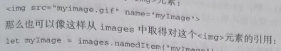

使用 DOM 最常见的情形可能就是获取某个元素的引用 , 然后对它们执行某些操作 document 对象上暴露了一些方法，可以实现这些操作。getElementById()和getglementsByTagname() 就是 Document 类型提供的两个方法
getElementById() 方法接收一个参数 , 既要获取元素的 ID , 如果找到了则返回这个元素 , 如果没找到则返回 null 。 参数 ID 必须跟元素在页面中的 id 属性值完全匹配 吗包括大小写 。 比如页面中有以下元素:
<div id="myDiv">Some text</div>
可以使用如下代码取得这个元素
let div = document.getElementById('myDiv') // 取得对这个 <div> 元素的引用
参数大小匹配会返回null
let div = document.getElementById('mydiv') // null
如果页面中存在多个具有相同ID的元素,则 getElementById()返回在文档中出现的第一个元素 。
getElementsByTagName()是另一个常用来获取元素引用的方法。这个方法接收一个参数 , 既要获取元素的标签名 , 返回包含零个或多个元素的 Nodelist 。 在 HTML 文档中 , 这个方法返回一个 HTMLCollection对象。考虑到二者都是 '实时' 列表 , HTMLCollection 与 Nodelist 是很相似的 , 例如 , 下面的代码会取得页面中所有的 <img> 元素并返回包含他们的HTMLCollection HTMLCollection 能获取页面中的各种元素节点 例如( <p> , <div> , <code>)
let images = document.getElementsByTagName('img')
这里把返回的 HTMLCollection 对象保存在了变量images中。与NodeList 对象一样, 也可以使用中括号或item()方法从 HTMLCollection 得特定的素。而取得素的数量同样可以通过 length 属性得知 , 如下所示:
console.log(images.length) // 图片数量
console.log(images[0].src) // 第一张图片的src 属性
console.log(images.item(0).src) // 同上
HTMLCollection对象还有一个额外的方法namedItem()，可通过标签的name属性取得某一项的引用 。假设页面中包含如下的 <img> 元素

<img src="image.png" name='myImage'>
那么也可以像这样从 images 中取得对这个 < img> 元素的引用:
let myImage = images.namedItem('myImage')
console.log(myImage); // img...
这样 , HTMLCollection就提供了除索引之外的另一种获取列表项的方式,从而为取得元素提供了便利。 对于有 name 属性的元素，还可以直接使用中括号来获取，如下面的例子所示:
let MyImage = images['myImage']
console.log(MyImage); // 同上
对HTMLCollection 对象而言，中括号既可以接收数值索引，也可以接收字符串索引。 而在后台 , 数值索引会调用 item() , 字符串索引会调用namedItem()
要取得文档中的所有元素 , 可以给getElementsByTagName()传人*。在JavaScript和CSS中， * (通配符) 一般被认为是匹配一切的字符。来看下面的例子:
let allElements = document.getElementsByTagName('*')
这行代码可以返回包含页面中所有元素的Hco11ection对象，顺序就是它们在页面中出现的顺序。因此第一项是<htm1>元素，第二项是 <head>元素，以此类推。
注意对于 document.getElementsByTagName()方法，虽然规范要求区分标签的大小写 , 但为了最大限度兼容原有 HTML页面，实际上是不区分大小写的。如果是在 XML页面(如XHTML)中使用,那么document.getElementsByTagName()就是区分大小写的 不过为了严谨一点还是区分大小写吧
HTMLDocument 类型上定义的获取元素的第三个方法是getElementsByName()。顾名思义，这个方法会返回具有给定name 属性的所有元素。getElementsByName()方法最常用于单选按钮，因为同一字段的单选按钮必须具有相同的 name 属性才能确保把正确的值发送给服务器，比如下面的例子:
<fieldset>
<legend>Which color do you prefer?</legend>
<ul>
<li>
<input type="radio" value="red" name='color' id='colorRed'>
<label for="colorRed">Red</label>
</li>
<li>
<input type="radio" value="green" name='color' id='colorGreen'>
<label for="colorRed">Green</label>
</li>
<li>
<input type="radio" value="blue" name='color' id='colorBule'>
<label for="colorRed">Blue</label>
</li>
</ul>
</fieldset>
fieldset 是分组标签会用框框包裹起来 , 而legend 作为标题显示在边框顶部
这里所有的单选按钮都有名为"color"的name 属性，但它们的ID都不一样。这是因为ID是为了匹配对应的 <1abe1>元素，而name 相同是为了保证只将三个中的一个值发送给服务器。然后就可以像下面这样取得所有单选按钮:
let radios = document.getElementsByName('color')
console.log(radios);
如果想要获取选中的值的话 , 就要使用radio.checked 来判断
与getElementsByTagName()一样,getElementsByName()方法也返回 HTMLcollection, 不在这种情况下 , namedItem() 方法只会取得第一项(因为所有项的name 属性都一样)